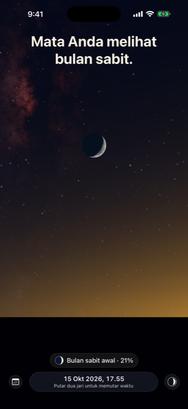
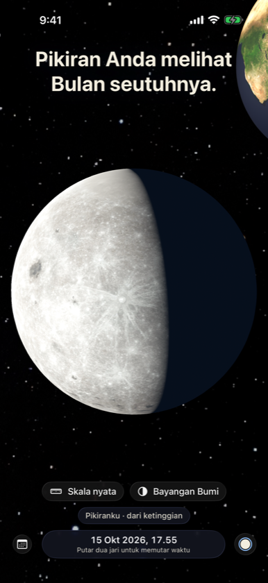
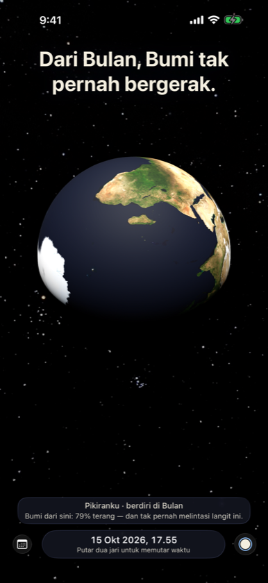

Mata Anda melihat bulan sabit. Pikiran Anda tahu Bulan tak pernah sabit. Two Egoes adalah satu langit utuh tempat Anda bisa berdiri di mana saja — cakrawala Anda, Bulan, Matahari, atau jauh di atas semuanya.



Berdiri di Bulan
Bumi diam di langit Bulan, dengan fase yang berlawanan dengan fase Bulan.
Mengapa tidak tiap bulan?
Bayangan Bumi di jarak Bulan, dengan proporsi sebenarnya, dan kemiringan 5° yang menentukan setiap gerhana.
Tak ada yang diam
Duduk di kursi, Anda menempuh sekitar 30 km mengelilingi Matahari setiap detik.